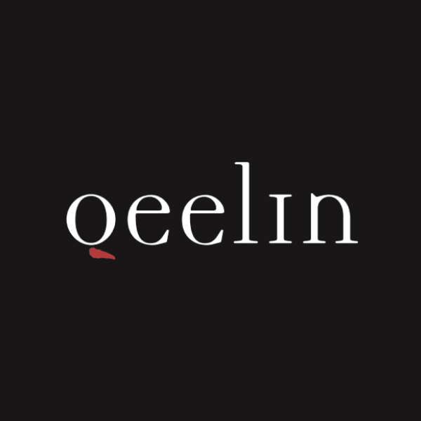

Banners below Official Account articles and pop-up ads in Moments.

Measuring campaign visibility across Chinese platforms
I developed a shared measurement framework for Qeelin’s campaign visibility across WeChat, RED, and Baidu. I supported campaigns around Chinese Valentine’s Day and the Cannes Film Festival through cross-platform reporting and paid keyword targeting.
- Decision
- How could the team review campaign visibility and click activity consistently across different Chinese platforms?
- My Role
- Marketing Analytics Intern, Dentsu iProspect
- Evidence
- Multiple Qeelin campaigns on WeChat, RED, and Baidu generated 5M+ platform-reported impressions and 600K platform-reported clicks over a three-month campaign period.
- Outcome
- A shared reporting framework guided search and content decisions; keyword targeting expanded paid search coverage.
01 / Campaign measurement
Building a Shared View of Campaign Visibility
The team needed a consistent way to review visibility across platforms with different discovery and content behaviors.
I used Excel PivotTables and VLOOKUP to organize platform data and prepare daily, weekly, and monthly campaign reports.
RED
Bidding-feed placements and PPC.
Baidu
Search placements and banners on brand homepages.
Shared review
Campaign context → Platform & placement → Visibility & click activity → Search & content decisions
I reviewed visibility and clicks with the platform and placement context attached. The shared reporting structure kept the formats comparable for discussion while preserving differences in how each platform defined its metrics.
02 / Search & keywords
Connecting Keywords to Brand Discoverability
I expanded paid keyword targeting so Qeelin products and content could appear as promoted recommendations in relevant searches. The workflow focused on paid discovery rather than organic SEO.
Pull search terms
I pulled frequently surfaced search terms from RED Focus (Juguang) and Baidu’s advertising platform.
Clean the lists
I removed irrelevant and duplicate terms to create a focused targeting list.
Add brand and competitor terms
I added Qeelin-related and competitor-related search terms to campaign targeting.
Enable promoted discovery
Those terms made Qeelin products and content eligible for promoted recommendations when users searched relevant competitor keywords.
03 / Campaign gallery
Campaign Visibility in Context
These examples show how Qeelin appeared across search, banners, and social feeds.
1 / 4
I helped the team use campaign visibility and click activity to guide search and content decisions, with platform and placement context preserved and broader paid search coverage.